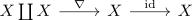

object as cylinder object over itself
Proposition
Let $(\mathcal{C}, \mathcal{W}, \mathrm{Cof}, \mathrm{Fib})$ be a model category, $X \in \mathcal{C}$ an object Then $X$ is a cylinder object for

Proof
follows from:
- isomorphisms as trivial fibrations